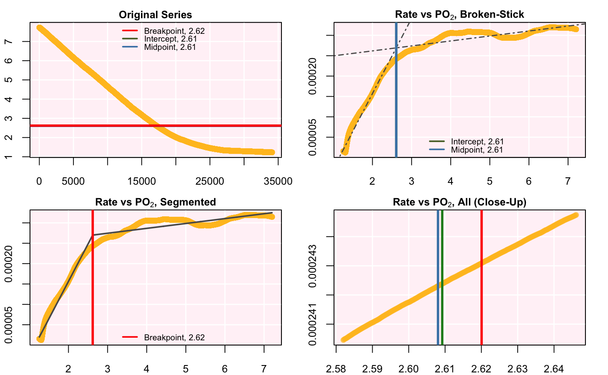

A function to calculate the critical oxygen tension, or the O2 concentration below which uptake rate becomes dependent upon oxygen concentration. It is calculated by both the "broken-stick" regression (BSR) approach, adopted from Yeager and Ultsch (1989), and the segmented regression approach, presented by Muggeo (2003).
pcrit(df, width = floor(0.1 * nrow(df)), has.rate = FALSE, plot = TRUE, parallel = TRUE)
| df | data frame or object of class |
|---|---|
| width | numeric. Number of rows over which to perform the rolling
regression. Defaults to |
| has.rate | logical. Defaults to FALSE. If you already possess a rate~DO dataset, change this to TRUE to process it without performing rolling regressions. |
| plot | logical. Defaults to TRUE. |
| parallel | logical. Defaults to TRUE. Should parallel processing be used? |
A list object of class pcrit.
To calculate Pcrit, the function requires data in the form of the rate of
oxygen uptake against dissolved oxygen (DO) concentration. The default data
input is a data frame of DO against time (e.g. squid.rd). The function
performs a rolling regression to determine rates, and matches these against a
rolling mean of the DO data. The function then performs the two
\(P_{crit}\) analyses methods on these data. The width of the
rolling regression is determined by the width argument. In most cases, the
default width (10% of the data length) works well, but this may vary with
data that has abrupt changes in rate, or is particularly noisy.
Alternatively, existing rate~DO data may be used, with the argument has.rate = "TRUE", in which case the function performs the two
\(P_{crit}\) analyses on these data directly without any
processing.
Yeager DP, Ultsch GR (1989) Physiological regulation and conformation: A BASIC program for the determination of critical points. Physiological Zoology 62:888–907. doi: 10.1086/physzool.62.4.30157935
Muggeo V (2008) Segmented: an R package to fit regression models with broken-line relationships. R News 8:20–25.
# Intensive, and a large dataset, so may take some time. pcrit(squid.rd)#>#>#>#> --Broken stick (Yeager & Ultsch 1989)-- #> Sum RSS 1.2689e-07 #> Intercept 2.60922 #> Midpoint 2.60805 #> #> --Segmented (Muggeo 2003)-- #> Std. Err. 0.00998917 #> Breakpoint 2.62006